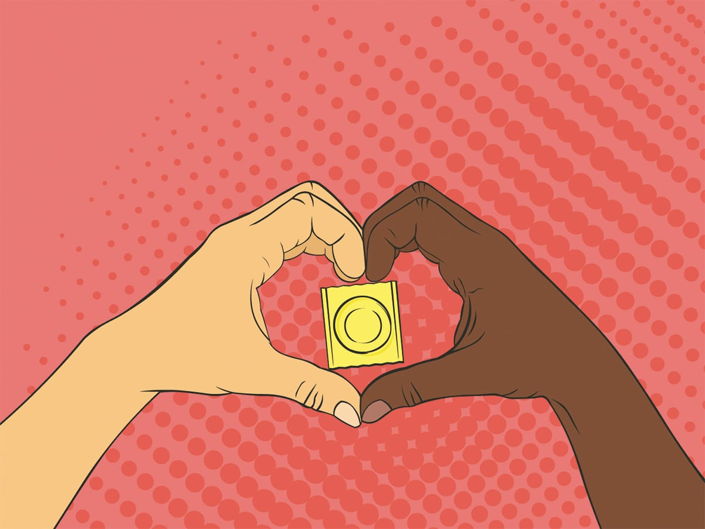

Datos sobre la educación sexual integral:

La educación sexual integral se refiere a programas educativos que van desde preescolar hasta el grado 12, y que cubren una amplia variedad de temas relacionados con: El desarrollo humano (incluyendo la pubertad, anatomía, orientación sexual e identidad de género). Las relaciones (incluyendo consigo mismx, la familia, las amistades, las relaciones amorosas y con lxs proveedores de servicios de salud). Las habilidades personales (incluyendo la comunicación, negociación, toma de decisiones y el aprendizaje acerca de los límites y cómo ponerlos). El comportamiento sexual (incluyendo todas las maneras en que las personas eligen -o no- ser sexuales).